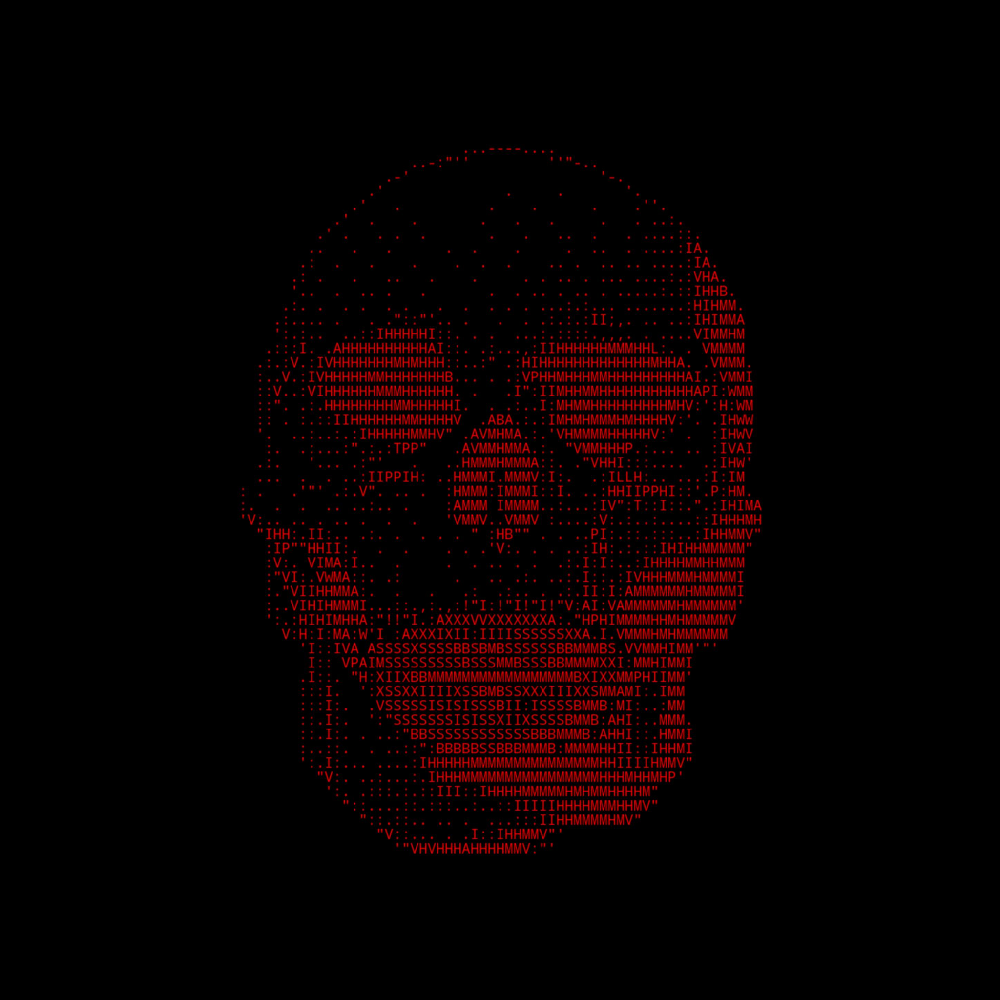

GHOSTLIGHT PROTOCOL // FINAL BOSS FAILED
dead relay response: Nice try, Captain Hiller. The alien mothership remains extremely unimpressed. "I don't hear no fat lady." fictional lab note: No real systems were contacted. No satellites were bothered. No unauthorized access occurred. The kill code was not accepted because this is a synthetic puzzle and the signal expects discipline before spectacle. diagnostic: - consent boundary checked? - real-world source rejected? - lab lock confirmed? - valid pass selected? - fragments sorted by interleave_index? - payload hex decoded? - XOR mask applied? receiver instruction: Return to the dead lab. Re-check the reconstruction path.
